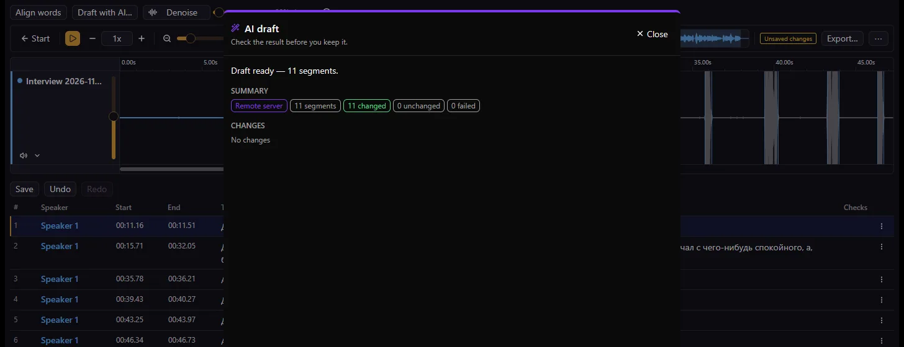

Сегменты и спикеры
У каждой реплики — спикер, начало и конец. Разделяйте по курсору, объединяйте соседние, подрезайте по звуку, переименовывайте спикеров или добавляйте новых из меню строки.
Exaudio
Сегментный редактор транскрипций для Windows: слушайте, правьте тайминг, назначайте спикеров и редактируйте текст в одном нативном окне — локально, без аккаунта.
Windows 10/11 x64 · Открытый код, MIT · Пакет не подписан: см. заметку о SmartScreen ниже

01 / Возможности
У каждой реплики — спикер, начало и конец. Разделяйте по курсору, объединяйте соседние, подрезайте по звуку, переименовывайте спикеров или добавляйте новых из меню строки.
По дорожке на каждый аудиофайл, масштабируемая волна, обзорная полоса, скорость воспроизведения, повтор и отмена/повтор правок. Выделите участок волны — получится сегмент.
Выравнивание слов, черновик расшифровки, заполнение пропусков и шумоподавление. Работает на вашей видеокарте через WebView2/WebGPU или на удалённом сервере. Модели скачиваются отдельно; любой результат — черновик для проверки.
Колонка «Проверки» отмечает проблемы по сегментам — пустой текст, наложения на одной дорожке, лишние пробелы — и предлагает безопасные быстрые исправления. Расширения добавляют свои правила; каждую проверку можно включить или отключить.
Импортируйте SRT, WebVTT или обычный текст на дорожку; экспортируйте SRT, WebVTT или TXT. Папка родного проекта хранит копию аудио и все сегменты для дальнейшей правки.
Команды, панели, проверки, форматы и режимы — это расширения. Встроенные написаны на Rust; устанавливаемые — WASM в песочнице, собираются с Rust SDK и публикуются в открытом каталоге.



02 / Установка
Нужны Git, Rust из rust-toolchain.toml, инструменты MSVC C++ с Windows SDK и CMake.
git clone https://github.com/Nominy/exaudio.git
cd exaudio
cargo run -p studio-appСтандартная сборка включает Local, Formats, базовые проверки, ИИ-инструменты и необязательную интеграцию Babel. Подмножества features и проверки — в docs/development.md.
03 / Клавиатура
| Клавиша | Действие |
|---|---|
| Space | Воспроизвести / пауза |
| ← → | Предыдущий / следующий сегмент |
| S | Разделить выбранный сегмент по курсору воспроизведения |
| D | Удалить выбранный сегмент |
| Ctrl + Z / Ctrl + Y | Отменить / повторить |
| Ctrl + F | Поиск в расшифровке |
| L | Повторять выделение для разреза (ещё раз — стоп) |
| Tab | Переключить призрачный курсор на другую дорожку спикера |
Значения по умолчанию для Windows. Клавиши воспроизведения и правки работают вне текстовых полей; L требует выделения для разреза; Tab действует в расшифровке. Полный список и переназначение — в диалоге горячих клавиш приложения.
04 / Расширения
Добавляйте команды, панели, проверки, форматы и режимы. Встроенные инструменты — нативные Rust-расширения; устанавливаемые — WebAssembly-компоненты на Rust SDK, работающие в песочнице с явными разрешениями.
Авторы хранят исходники и версии пакетов .exaudio в собственных репозиториях GitHub. Общий индекс перечисляет выпуски, совместимость, хеши пакетов и запрашиваемые разрешения — но не ручается за каждого автора.
Доступ WASM к документам, аудио, хранилищу и сетевым хостам выдаётся явно. Встроенные нативные расширения работают с правами приложения. Перед установкой проверьте автора, код и разрешения.
05 / FAQ
Нет. Режим Local открывает аудио и проекты на этом компьютере и работает без интернета. Babel и Relay — необязательные сервисные режимы со своим доступом; для Local они не нужны.
Локальная обработка бесплатна: она идёт на вашей видеокарте через WebView2/WebGPU после установки среды выполнения и моделей (скачиваются отдельно, по своим лицензиям). Удалённый сервер держит автор, бесплатно; он может быть занят или недоступен, а аудио или текст передаются на него. Бэкенд выбирается в настройках ИИ-расширения.
Аудио: WAV, MP3, FLAC, OGG, M4A, MP4, WebM и MKV (декодирование зависит от кодека внутри). Расшифровки: импорт и экспорт SRT, WebVTT и обычного текста. Субтитры — формат передачи результата; редактируемый источник — папка родного проекта.
Windows-пакеты не подписаны сертификатом, поэтому SmartScreen показывает предупреждение о неизвестном издателе. Скачивайте только из Releases Nominy/exaudio, сверяйте SHA256SUMS и не отключайте защиту Windows.
Родной проект — папка, которую вы выбираете при сохранении: project.json и папка audio/ с копией аудио каждой дорожки, поэтому проект самодостаточен и переносим. Снимки несохранённой работы, настройки и установленные расширения хранятся в %APPDATA%\Exaudio.
Создайте issue на GitHub: версии Exaudio и Windows, режим и расширения, шаги воспроизведения и текст ошибки. Используйте синтетическую запись; не прикладывайте ключи, приватные задания и чужое аудио.
Создать issue ↗